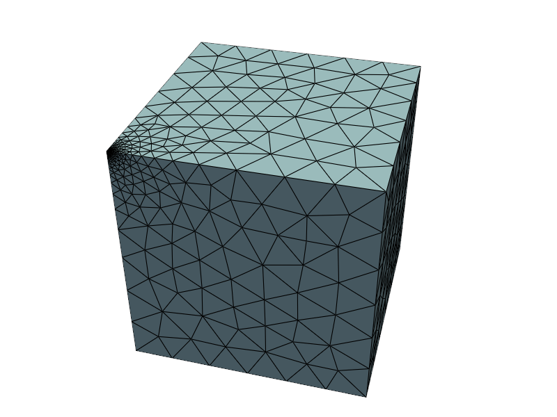
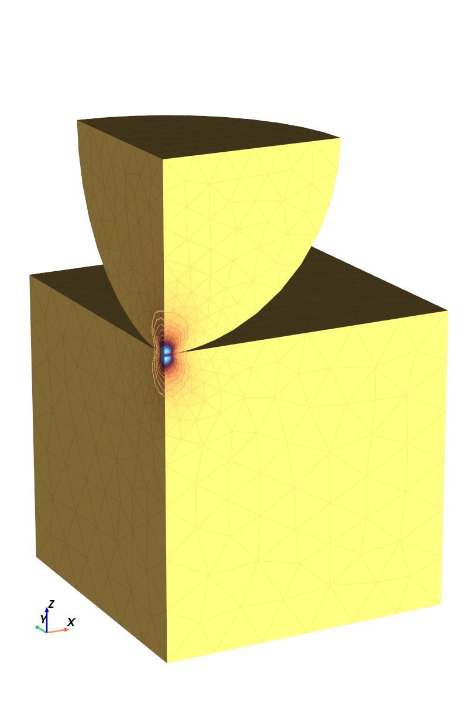
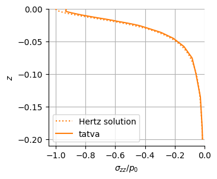
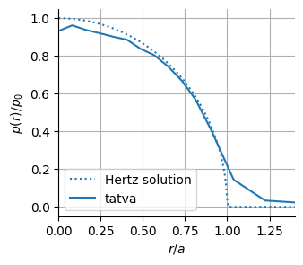

Contact mechanics¤
Colab Setup (Install Dependencies)
# Only run this if we are in Google Colab
if "google.colab" in str(get_ipython()):
print("Installing dependencies from pyproject.toml...")
# This installs the repo itself (and its dependencies)
!apt-get install gmsh
!apt-get install -qq xvfb libgl1-mesa-glx
!pip install pyvista -qq
!pip install -q "git+https://github.com/smec-ethz/tatva-docs.git"
import pyvista as pv
pv.global_theme.jupyter_backend = "static"
pv.global_theme.notebook = True
pv.start_xvfb()
print("Installation complete!")
In this notebook, we model the circular punch of a sphere on a deformable plane.
We impose the contact constraint via a penalty approach by extending the total energy functional with a contact contribution \(\Psi_c\), defined by the penalty density
where \(g\) represents the normal gap function and \(\kappa\) denotes the penalty parameter. The resulting total energy functional reads
import gmsh
import jax
import jax.numpy as jnp
import pyvista as pv
from jax import Array
from jax_autovmap import autovmap
from tatva import Mesh, Operator
jax.config.update("jax_enable_x64", True)
pv.global_theme.jupyter_backend = "static"
Meshing¤
We generate two separate meshes with gmsh; one for the cube, another one for the sphere.
Code for generating the mesh
import math
import os
import gmsh
import numpy as np
def extract_mesh() -> tuple[Mesh, dict[str, np.ndarray]]:
node_tags, coords, _ = gmsh.model.mesh.getNodes()
nodes_arr = np.array(coords).reshape(-1, 3)
# Gmsh tags are 1-based and potentially non-contiguous.
# We map them to 0-based indices for JAX.
tag_map = {tag: i for i, tag in enumerate(node_tags)}
# 5. Extract Tetrahedral Elements
# Element Type 4 is 4-node Tetrahedron
# getElementsByType returns: (element_tags, node_tags)
try:
_, elem_node_tags = gmsh.model.mesh.getElementsByType(4)
elem_node_tags = np.array(elem_node_tags).reshape(-1, 4)
except ValueError:
gmsh.finalize()
raise
# Remap tags to 0-based indices
# Vectorized map using a lookup array if tags are contiguous,
# but loop is safer for general Gmsh output.
elements_array = np.array(
[[tag_map[tag] for tag in elem] for elem in elem_node_tags]
)
# --- physical surfaces: collect 2D triangle faces (Tri3 = type 2) per physical group ---
# Returns: dict[name:str] -> np.ndarray[int] of shape (ntri, 3) with 0-based node indices
physical_surfaces: dict[str, np.ndarray] = {}
for dim, pg_tag in gmsh.model.getPhysicalGroups(dim=2):
name = gmsh.model.getPhysicalName(dim, pg_tag)
# Entities (surface tags) that belong to this physical group
entities = gmsh.model.getEntitiesForPhysicalGroup(dim, pg_tag)
tris = []
for ent in entities:
# Get all mesh elements on this surface entity
types, _, node_tags_by_type = gmsh.model.mesh.getElements(dim, ent)
for etype, ntags in zip(types, node_tags_by_type):
if etype != 2: # Tri3 only
continue
tri_nodes = np.array(ntags, dtype=np.int64).reshape(-1, 3)
tris.append(tri_nodes)
if not tris:
physical_surfaces[name] = np.zeros((0, 3), dtype=np.int32)
continue
tri_nodes = np.vstack(tris)
tri_nodes_0 = np.array(
[[tag_map[t] for t in tri] for tri in tri_nodes], dtype=np.int32
)
physical_surfaces[name] = tri_nodes_0
return Mesh(
coords=np.array(nodes_arr),
elements=np.array(elements_array),
), physical_surfaces
def get_mesh_cube(
h_min: float, h_max: float, h_corner: float
) -> tuple[Mesh, dict[str, np.ndarray]]:
ox, oy, oz = (0.0, 0.0, 0.0)
lx, ly, lz = (1.0, 1.0, -1.0)
gmsh.initialize()
gmsh.model.add("cube")
gmsh.option.setNumber("General.Terminal", 1)
gmsh.option.setNumber("Mesh.MshFileVersion", 4.1)
gmsh.option.setNumber("Mesh.ElementOrder", 1)
gmsh.option.setNumber("Mesh.Algorithm3D", 4)
gmsh.option.setNumber("Mesh.CharacteristicLengthMin", min(h_min, h_corner))
gmsh.option.setNumber("Mesh.CharacteristicLengthMax", h_max)
# ---- 1) points (we keep the tags we care about) ----
p000 = gmsh.model.occ.addPoint(ox, oy, oz) # corner of interest for refinement
p100 = gmsh.model.occ.addPoint(ox + lx, oy, oz)
p110 = gmsh.model.occ.addPoint(ox + lx, oy + ly, oz)
p010 = gmsh.model.occ.addPoint(ox, oy + ly, oz)
# ---- 2) curves + base surface (z = oz) ----
l01 = gmsh.model.occ.addLine(p000, p100)
l12 = gmsh.model.occ.addLine(p100, p110)
l23 = gmsh.model.occ.addLine(p110, p010)
l30 = gmsh.model.occ.addLine(p010, p000)
cloop = gmsh.model.occ.addCurveLoop([l01, l12, l23, l30])
s_base = gmsh.model.occ.addPlaneSurface([cloop])
# ---- 3) volume via extrusion; capture returned entity tags (no searching) ----
# extrude returns a list of (dim, tag). For a surface extrusion, you get:
# - one top surface (dim=2),
# - one volume (dim=3),
# - lateral surfaces (dim=2) ...
out = gmsh.model.occ.extrude([(2, s_base)], 0.0, 0.0, lz)
vol_tag = next(tag for (dim, tag) in out if dim == 3)
gmsh.model.occ.synchronize()
# ---- refinement field around p000 (no point lookup loop) ----
dist = gmsh.model.mesh.field.add("Distance")
gmsh.model.mesh.field.setNumbers(dist, "PointsList", [p000])
thr = gmsh.model.mesh.field.add("Threshold")
gmsh.model.mesh.field.setNumber(thr, "IField", dist)
gmsh.model.mesh.field.setNumber(thr, "LcMin", h_corner)
gmsh.model.mesh.field.setNumber(thr, "LcMax", h_max)
gmsh.model.mesh.field.setNumber(thr, "DistMin", h_corner * 10)
gmsh.model.mesh.field.setNumber(thr, "DistMax", 0.5)
gmsh.model.mesh.field.setAsBackgroundMesh(thr)
# ---- physical groups (using known tags) ----
vol_pg = gmsh.model.addPhysicalGroup(3, [vol_tag], tag=1)
gmsh.model.setPhysicalName(3, vol_pg, "cube_volume")
top_pg = gmsh.model.addPhysicalGroup(2, [s_base], tag=2)
gmsh.model.setPhysicalName(2, top_pg, "cube_top")
gmsh.model.mesh.generate(3)
mesh = extract_mesh()
gmsh.finalize()
return mesh
def mesh_bottom_eighth_sphere(
radius: float, h_min: float, h_max: float, h_corner: float
) -> tuple[Mesh, dict[str, np.ndarray]]:
r_ref = 0.6 * radius
gmsh.initialize()
gmsh.model.add("bottom_eighth_sphere")
gmsh.option.setNumber("General.Terminal", 1)
gmsh.option.setNumber("Mesh.MshFileVersion", 4.1)
gmsh.option.setNumber("Mesh.ElementOrder", 1)
gmsh.option.setNumber("Mesh.Algorithm3D", 4)
gmsh.option.setNumber("Mesh.CharacteristicLengthMin", min(h_min, h_corner))
gmsh.option.setNumber("Mesh.CharacteristicLengthMax", h_max)
sphere_tag = gmsh.model.occ.addSphere(0.0, 0.0, radius, radius)
box_tag = gmsh.model.occ.addBox(0.0, 0.0, 0.0, radius, radius, radius)
out = gmsh.model.occ.intersect(
[(3, sphere_tag)], [(3, box_tag)], removeObject=True, removeTool=True
)
gmsh.model.occ.synchronize()
vol_tag = out[0][0][1]
# ---- refinement field at corner (0,0,0) ----
# use Distance field with an explicit point; no need to find an existing CAD vertex
p_corner = gmsh.model.occ.addPoint(0.0, 0.0, 0.0)
gmsh.model.occ.synchronize()
dist = gmsh.model.mesh.field.add("Distance")
gmsh.model.mesh.field.setNumbers(dist, "PointsList", [p_corner])
thr = gmsh.model.mesh.field.add("Threshold")
gmsh.model.mesh.field.setNumber(thr, "IField", dist)
gmsh.model.mesh.field.setNumber(thr, "LcMin", h_corner)
gmsh.model.mesh.field.setNumber(thr, "LcMax", h_max)
gmsh.model.mesh.field.setNumber(thr, "DistMin", h_corner * 10)
gmsh.model.mesh.field.setNumber(thr, "DistMax", r_ref)
gmsh.model.mesh.field.setAsBackgroundMesh(thr)
# --- identify spherical boundary surface by OCC type ---
boundary = gmsh.model.getBoundary([(3, vol_tag)], oriented=False)
tol = 1e-6 # << much looser than 1e-10
boundary = gmsh.model.getBoundary([(3, vol_tag)], oriented=False)
sphere_candidates = []
for dim, tag in boundary:
if dim != 2:
continue
xmin, ymin, zmin, xmax, ymax, zmax = gmsh.model.getBoundingBox(2, tag)
is_x0 = abs(xmin - 0.0) < tol and abs(xmax - 0.0) < tol
is_y0 = abs(ymin - 0.0) < tol and abs(ymax - 0.0) < tol
is_zr = abs(zmin - radius) < tol and abs(zmax - radius) < tol
if not (is_x0 or is_y0 or is_zr):
sphere_candidates.append(tag)
if len(sphere_candidates) != 1:
raise RuntimeError(
f"Expected 1 spherical face, got {len(sphere_candidates)}: {sphere_candidates}"
)
curved_surface = sphere_candidates[0]
vol_pg = gmsh.model.addPhysicalGroup(3, [vol_tag], tag=1)
gmsh.model.setPhysicalName(3, vol_pg, "sphere_bottom_eighth")
surf_pg = gmsh.model.addPhysicalGroup(2, [curved_surface], tag=2)
gmsh.model.setPhysicalName(2, surf_pg, "sphere_outer")
gmsh.model.mesh.generate(3)
mesh = extract_mesh()
gmsh.finalize()
return mesh
Code for visualizing the mesh with PyVista
pv.set_jupyter_backend("client")
def get_pyvista_grid(mesh, cell_type="quad"):
if mesh.coords.shape[1] == 2:
pv_points = np.hstack((mesh.coords, np.zeros(shape=(mesh.coords.shape[0], 1))))
else:
pv_points = np.array(mesh.coords)
cell_type_dict = {
"quad": 4,
"triangle": 3,
"tetra": 4,
"hexahedron": 8,
}
pv_cells = np.hstack(
(
np.full(
fill_value=cell_type_dict[cell_type], shape=(mesh.elements.shape[0], 1)
),
mesh.elements,
)
)
pv_cell_type_dict = {
"quad": pv.CellType.QUAD,
"triangle": pv.CellType.TRIANGLE,
"tetra": pv.CellType.TETRA,
"hexahedron": pv.CellType.HEXAHEDRON,
}
cell_types = np.full(
fill_value=pv_cell_type_dict[cell_type], shape=(mesh.elements.shape[0],)
)
grid = pv.UnstructuredGrid(pv_cells.flatten(), cell_types, pv_points)
return grid
h_min = 0.01
h_max = 0.3
h_corner = 0.002
mesh_cube, pg_cube = get_mesh_cube(h_min, h_max, h_corner)
Output
Info : Meshing 1D...
Info : [ 0%] Meshing curve 1 (Line)
Info : [ 10%] Meshing curve 2 (Line)
Info : [ 20%] Meshing curve 3 (Line)
Info : [ 30%] Meshing curve 4 (Line)
Info : [ 40%] Meshing curve 5 (Line)
Info : [ 50%] Meshing curve 6 (Line)
Info : [ 60%] Meshing curve 7 (Line)
Info : [ 60%] Meshing curve 8 (Line)
Info : [ 70%] Meshing curve 9 (Line)
Info : [ 80%] Meshing curve 10 (Line)
Info : [ 90%] Meshing curve 11 (Line)
Info : [100%] Meshing curve 12 (Line)
Info : Done meshing 1D (Wall 0.00662568s, CPU 0.00702s)
Info : Meshing 2D...
Info : [ 0%] Meshing surface 1 (Plane, Frontal-Delaunay)
Info : [ 20%] Meshing surface 2 (Plane, Frontal-Delaunay)
Info : [ 40%] Meshing surface 3 (Plane, Frontal-Delaunay)
Info : [ 60%] Meshing surface 4 (Plane, Frontal-Delaunay)
Info : [ 70%] Meshing surface 5 (Plane, Frontal-Delaunay)
Info : [ 90%] Meshing surface 6 (Plane, Frontal-Delaunay)
Info : Done meshing 2D (Wall 0.0299664s, CPU 0.030777s)
Info : Meshing 3D...
Info : Meshing volume 1 (Frontal)
Info : Region 1 Face 2, 1 intersect
Info : Region 1 Face 3, 1 intersect
Info : Region 1 Face 4, 1 intersect
Info : Region 1 Face 5, 1 intersect
Info : Region 1 Face 1, 1 intersect
Info : Region 1 Face 6, 0 intersect
Info : CalcLocalH: 872 Points 0 Elements 1740 Surface Elements
Info : Check subdomain 1 / 1
Info : 1740 open elements
Info : Meshing subdomain 1 of 1
Info : 1740 open elements
Info : Use internal rules
Info : 1740 open elements
Info : Delaunay meshing
Info : number of points: 872
Info : blockfill local h
Info : number of points: 1540
Info : Points: 1540
Info : Elements: 8619
Info : 0 open elements
Info : Num open: 0
Info : free: 0, fixed: 8619
Info : SwapImprove
Info : 0 swaps performed
Info : 0 open elements
Info : Num open: 0
Info : free: 0, fixed: 8619
Info : SwapImprove
Info : 0 swaps performed
Info : 0 degenerated elements removed
Info : Remove intersecting
Info : Remove outer
Info : tables filled
Info : outer removed
Info : 1740 open elements
Info : 1540 points, 6728 elements
Info : 0 open elements
Info : 0 open faces
Info : start tetmeshing
Info : Use internal rules
Info : 0 open elements
Info : Success !
Info : 1540 points, 6728 elements
Info : Done meshing 3D (Wall 0.0881125s, CPU 0.08839s)
Info : Optimizing mesh...
Info : Optimizing volume 1
Info : Optimization starts (volume = 1) with worst = 0.025172 / average = 0.681818:
Info : 0.00 < quality < 0.10 : 21 elements
Info : 0.10 < quality < 0.20 : 56 elements
Info : 0.20 < quality < 0.30 : 173 elements
Info : 0.30 < quality < 0.40 : 284 elements
Info : 0.40 < quality < 0.50 : 301 elements
Info : 0.50 < quality < 0.60 : 575 elements
Info : 0.60 < quality < 0.70 : 1641 elements
Info : 0.70 < quality < 0.80 : 2139 elements
Info : 0.80 < quality < 0.90 : 1132 elements
Info : 0.90 < quality < 1.00 : 403 elements
Info : 191 edge swaps, 48 node relocations (volume = 1): worst = 0.233998 / average = 0.696372 (Wall 0.00368831s, CPU 0.003454s)
Info : 209 edge swaps, 56 node relocations (volume = 1): worst = 0.239252 / average = 0.696901 (Wall 0.00458502s, CPU 0.004442s)
Info : 210 edge swaps, 56 node relocations (volume = 1): worst = 0.239252 / average = 0.69702 (Wall 0.00514286s, CPU 0.004442s)
Info : No ill-shaped tets in the mesh :-)
Info : 0.00 < quality < 0.10 : 0 elements
Info : 0.10 < quality < 0.20 : 0 elements
Info : 0.20 < quality < 0.30 : 11 elements
Info : 0.30 < quality < 0.40 : 301 elements
Info : 0.40 < quality < 0.50 : 346 elements
Info : 0.50 < quality < 0.60 : 650 elements
Info : 0.60 < quality < 0.70 : 1593 elements
Info : 0.70 < quality < 0.80 : 2106 elements
Info : 0.80 < quality < 0.90 : 1160 elements
Info : 0.90 < quality < 1.00 : 420 elements
Info : Done optimizing mesh (Wall 0.00831119s, CPU 0.007544s)
Info : 1540 nodes 8469 elements
pl = pv.Plotter(window_size=(800, 600))
pl.add_mesh(get_pyvista_grid(mesh_cube, cell_type="tetra"), show_edges=True)
pl.camera.azimuth = -120
_ = pl.show()

radius = 0.6
mesh_sphere, pg_sphere = mesh_bottom_eighth_sphere(radius, h_min, h_max, h_corner)
grid_sphere = get_pyvista_grid(mesh_sphere, cell_type="tetra")
Output
Info : Cannot bind existing OpenCASCADE volume 1 to second tag 2
Info : Could not preserve tag of 3D object 2 (->1)
Info : Meshing 1D...
Info : [ 0%] Meshing curve 1 (Circle)
Info : [ 20%] Meshing curve 2 (Circle)
Info : [ 50%] Meshing curve 4 (Circle)
Info : [ 60%] Meshing curve 5 (Line)
Info : [ 80%] Meshing curve 6 (Line)
Info : [ 90%] Meshing curve 7 (Line)
Info : Done meshing 1D (Wall 0.00492711s, CPU 0.004363s)
Info : Meshing 2D...
Info : [ 0%] Meshing surface 1 (Sphere, Frontal-Delaunay)
Info : [ 30%] Meshing surface 2 (Plane, Frontal-Delaunay)
Info : [ 60%] Meshing surface 3 (Plane, Frontal-Delaunay)
Info : [ 80%] Meshing surface 4 (Plane, Frontal-Delaunay)
Info : Done meshing 2D (Wall 0.0239352s, CPU 0.024075s)
Info : Meshing 3D...
Info : Meshing volume 1 (Frontal)
Info : Region 1 Face 1, 1 intersect
Info : Region 1 Face 2, 1 intersect
Info : Region 1 Face 3, 0 intersect
Info : Region 1 Face 4, 0 intersect
Info : CalcLocalH: 770 Points 0 Elements 1536 Surface Elements
Info : Check subdomain 1 / 1
Info : 1536 open elements
Info : Meshing subdomain 1 of 1
Info : 1536 open elements
Info : Use internal rules
Info : 1536 open elements
Info : Delaunay meshing
Info : number of points: 770
Info : blockfill local h
Info : number of points: 1485
Info : Points: 1485
Info : Elements: 8398
Info : 8 open elements
Info : Num open: 8
Info : free: 93, fixed: 8305
Info : SwapImprove
Info : 11 swaps performed
Info : 0 open elements
Info : Num open: 0
Info : free: 0, fixed: 8395
Info : SwapImprove
Info : 0 swaps performed
Info : 0 degenerated elements removed
Info : Remove intersecting
Info : Remove outer
Info : tables filled
Info : outer removed
Info : 1536 open elements
Info : 1485 points, 6768 elements
Info : 0 open elements
Info : 0 open faces
Info : start tetmeshing
Info : Use internal rules
Info : 0 open elements
Info : Success !
Info : 1485 points, 6768 elements
Info : Done meshing 3D (Wall 0.0863274s, CPU 0.084559s)
Info : Optimizing mesh...
Info : Optimizing volume 1
Info : Optimization starts (volume = 0.112136) with worst = 0.0388189 / average = 0.670886:
Info : 0.00 < quality < 0.10 : 8 elements
Info : 0.10 < quality < 0.20 : 92 elements
Info : 0.20 < quality < 0.30 : 225 elements
Info : 0.30 < quality < 0.40 : 384 elements
Info : 0.40 < quality < 0.50 : 321 elements
Info : 0.50 < quality < 0.60 : 643 elements
Info : 0.60 < quality < 0.70 : 1447 elements
Info : 0.70 < quality < 0.80 : 2136 elements
Info : 0.80 < quality < 0.90 : 1166 elements
Info : 0.90 < quality < 1.00 : 346 elements
Info : 232 edge swaps, 76 node relocations (volume = 0.112136): worst = 0.129743 / average = 0.688803 (Wall 0.00520292s, CPU 0.004763s)
Info : 258 edge swaps, 91 node relocations (volume = 0.112136): worst = 0.233733 / average = 0.690749 (Wall 0.00665104s, CPU 0.006296s)
Info : 261 edge swaps, 95 node relocations (volume = 0.112136): worst = 0.233733 / average = 0.691017 (Wall 0.00753035s, CPU 0.007228s)
Info : No ill-shaped tets in the mesh :-)
Info : 0.00 < quality < 0.10 : 0 elements
Info : 0.10 < quality < 0.20 : 0 elements
Info : 0.20 < quality < 0.30 : 16 elements
Info : 0.30 < quality < 0.40 : 371 elements
Info : 0.40 < quality < 0.50 : 419 elements
Info : 0.50 < quality < 0.60 : 715 elements
Info : 0.60 < quality < 0.70 : 1422 elements
Info : 0.70 < quality < 0.80 : 2112 elements
Info : 0.80 < quality < 0.90 : 1163 elements
Info : 0.90 < quality < 1.00 : 382 elements
Info : Done optimizing mesh (Wall 0.0109751s, CPU 0.01085s)
Info : 1486 nodes 8248 elements
Warning : Intersection - BOPAlgo_AlertUnableToOrientTheShape BOPAlgo_AlertUnableToOrientTheShape
pl = pv.Plotter(window_size=(800, 600))
pl.add_mesh(grid_sphere, show_edges=True)
pl.camera.azimuth = -120
_ = pl.show()

Problem setup¤
System definition¤
Our problem includes two fields; \(u_\text{cube}\) and \(u_\text{sphere}\).
To handle them, we use both Compound and Lifter utilities.
We first declare the Solution as a subclass of Compound:
from tatva.compound import Compound, field
class Solution(Compound):
u_cube = field((mesh_cube.coords.shape[0], 3))
u_sphere = field((mesh_sphere.coords.shape[0], 3))
Then we find boundary nodes to apply BCs.
Exploiting the symmetry in the problem, we model only a quarter of the full geometric problem.
This means, we need to constrain these respective displacements.
Finally, we apply a top displacement z_disp on the top surface of the sphere octant.
We construct the lifter for our problem:
from tatva.lifter import DirichletBC, Lifter
z_disp = -0.001
cube_sym_x = jnp.where(jnp.isclose(mesh_cube.coords[:, 0], 0.0))[0]
cube_sym_y = jnp.where(jnp.isclose(mesh_cube.coords[:, 1], 0.0))[0]
cube_bottom = jnp.where(jnp.isclose(mesh_cube.coords[:, 2], -1.0))[0]
sphere_sym_x = jnp.where(jnp.isclose(mesh_sphere.coords[:, 0], 0.0))[0]
sphere_sym_y = jnp.where(jnp.isclose(mesh_sphere.coords[:, 1], 0.0))[0]
sphere_top = jnp.where(
jnp.isclose(mesh_sphere.coords[:, 2], mesh_sphere.coords[:, 2].max())
)[0]
lifter = Lifter(
Solution.size,
DirichletBC(Solution.u_cube[cube_sym_x, 0]),
DirichletBC(Solution.u_cube[cube_sym_y, 1]),
DirichletBC(Solution.u_cube[cube_bottom, 2]),
DirichletBC(Solution.u_sphere[sphere_sym_x, 0]),
DirichletBC(Solution.u_sphere[sphere_sym_y, 1]),
DirichletBC(Solution.u_sphere[sphere_top, 2], z_disp),
)
Finally, we now define the two Operators from the meshes and the element type.
In this example, we use 4-node Tetrahedral elements Tetrahedron4.
from tatva.element import Tetrahedron4
el = Tetrahedron4()
op_cube = Operator(mesh_cube, el)
op_sphere = Operator(mesh_sphere, el)
Contact energy definition¤
Contact potential energy contribution based on gap function between two deformable meshes. The contact contribution to the total energy is evaluated using a two-pass node-to-surface contact detection scheme. The total contact energy is defined as the arithmetic mean of the two surface contributions. This symmetric formulation avoids master–slave bias and improves robustness, particularly for comparable mesh resolutions and material stiffnesses.
First pass (sphere → cube):
- Each surface node of the sphere is orthogonally projected onto the cube surface.
- The normal gap is evaluated at the projection point.
- The corresponding penalty density is integrated over the sphere surface.
Second pass (cube → sphere):
- Each surface node of the cube is orthogonally projected onto the sphere surface.
- The normal gap is computed analogously.
- The penalty contribution is integrated over the cube surface.
To integrate across the 3d manifold, we need to define a Tri3Manifold element type, and we define two surface operators:
from tatva.element import Tri3
class Tri3Manifold(Tri3):
"""A 3-node linear triangular element on a 2D manifold embedded in 3D space."""
def get_jacobian(self, xi: Array, nodal_coords: Array) -> tuple[Array, Array]:
dNdr = self.shape_function_derivative(xi)
J = dNdr @ nodal_coords # shape (2, 2) or (2, 3)
G = J @ J.T # shape (2, 2)
detJ = jnp.sqrt(jnp.linalg.det(G))
return J, detJ
def gradient(self, xi: Array, nodal_values: Array, nodal_coords: Array) -> Array:
dNdr = self.shape_function_derivative(xi) # shape (2, 3)
J, _ = self.get_jacobian(xi, nodal_coords) # shape (2, 3)
G_inv = jnp.linalg.inv(J @ J.T) # shape (2, 2)
J_plus = J.T @ G_inv # shape (3, 2)
dudxi = dNdr @ nodal_values # shape (2, n_values)
return J_plus @ dudxi # shape (3, n_values)
surf_op_cube = Operator(
mesh_cube._replace(elements=pg_cube["cube_top"]), Tri3Manifold()
)
surf_op_sphere = Operator(
mesh_sphere._replace(elements=pg_sphere["sphere_outer"]), Tri3Manifold()
)
Code for computing the gap function
@autovmap(x=1, el_coords=2, reference_point=1)
def _get_gap_and_inside_mask(
x: Array, el_coords: Array, reference_point: Array, *, eps: float = 1e-12
) -> tuple[Array, Array]:
x0, x1, x2 = el_coords
e0 = x1 - x0
e1 = x2 - x0
n0 = jnp.cross(e0, e1)
nn = jnp.vdot(n0, n0)
def _degenerate():
return jnp.array(False), jnp.array(0.0, dtype=x.dtype)
def _regular():
n = n0 / jnp.sqrt(nn)
# orient normal (only affects gap sign)
n = jnp.where(jnp.dot(n, x0 - reference_point) > 0.0, n, -n)
gap = jnp.dot(x - x0, n)
xproj = x - gap * n
# inside test using edge half-spaces
c0 = jnp.dot(jnp.cross(x1 - x0, xproj - x0), n)
c1 = jnp.dot(jnp.cross(x2 - x1, xproj - x1), n)
c2 = jnp.dot(jnp.cross(x0 - x2, xproj - x2), n)
inside = (c0 >= -eps) & (c1 >= -eps) & (c2 >= -eps)
return inside, gap
return jax.lax.cond(nn < eps**2, _degenerate, _regular)
def get_gap(x: Array, el_coords: Array, reference_point: Array) -> Array:
mask, gap = _get_gap_and_inside_mask(x, el_coords, reference_point)
return jnp.min(jnp.where(mask, gap, jnp.inf))
@jax.jit
def contact_energy(x_cube: Array, x_sphere: Array, *, kappa: float = 1e4) -> Array:
"""Contact energy with cube as master surface.
Args:
x_cube: (n_cube_nodes, 3) array of cube node coordinates
x_sphere: (n_sphere_nodes, 3) array of sphere node coordinates
kappa: penalty stiffness parameter
"""
# for each sphere surface quad point, compute gap to cube surface
gap = jax.vmap(
lambda x: get_gap(x, x_cube[pg_cube["cube_top"]], jnp.array([0.1, 0.1, -1.0])),
in_axes=0,
)(surf_op_sphere.eval(x_sphere))
# for each cube surface quad point, compute gap to sphere surface
gap_inv = jax.vmap(
lambda x: get_gap(
x,
x_sphere[pg_sphere["sphere_outer"]],
jnp.array([0.1, 0.1, radius + 0.1]),
),
in_axes=0,
)(surf_op_cube.eval(x_cube))
# only negative gaps contribute to energy; add singleton dim for integration
gap = jnp.minimum(gap, 0.0)[..., None]
gap_inv = jnp.minimum(gap_inv, 0.0)[..., None]
# return arithmetic mean of sphere and cube contributions to energy
return 0.5 * (
0.5 * kappa * surf_op_sphere.integrate(gap**2)
+ 0.5 * kappa * surf_op_cube.integrate(gap_inv**2)
)
Elastic energy definition¤
Here, we employ a linear elastic material model. We define the material point functions for strain and stress:
@autovmap(grad_u=2)
def compute_strain(grad_u: Array) -> Array:
return 0.5 * (grad_u + grad_u.T)
@autovmap(eps=2, mu=0, lmbda=0)
def compute_stress(eps: Array, mu: float, lmbda: float) -> Array:
I = jnp.eye(3)
return 2 * mu * eps + lmbda * jnp.trace(eps) * I
@autovmap(grad_u=2, mu=0, lmbda=0)
def strain_energy(grad_u: Array, mu: float, lmbda: float) -> Array:
eps = compute_strain(grad_u)
sigma = compute_stress(eps, mu, lmbda)
return 0.5 * jnp.einsum("ij,ij->", sigma, eps)
Let's quickly add a material utility.
from typing import NamedTuple
class Material(NamedTuple):
"""Material properties for the elasticity operator."""
mu: float # Diffusion coefficient
lmbda: float # Diffusion coefficient
@classmethod
def from_youngs_poisson(cls, E: float, nu: float) -> "Material":
mu = E / (3 - 6 * nu)
lmbda = E * nu / (1 - 2 * nu) / (1 + nu)
return cls(mu=mu, lmbda=lmbda)
mat_cube = Material.from_youngs_poisson(1, 0.3)
mat_sphere = Material.from_youngs_poisson(1, 0.3)
Finally, we define the total energy functional:
@jax.jit(static_argnames=("kappa",))
def total_energy_full(u_full: Array, kappa: float = 1e2) -> Array:
(u1, u2) = Solution(u_full)
e1 = strain_energy(op_cube.grad(u1), mat_cube.mu, mat_cube.lmbda)
e2 = strain_energy(op_sphere.grad(u2), mat_sphere.mu, mat_sphere.lmbda)
# extract surface displacements, compute position, and contact energy
xcube_surf = mesh_cube.coords + u1 # current position of all cube nodes
xsphere_surf = mesh_sphere.coords + u2 # current position of all sphere nodes
e_contact = contact_energy(xcube_surf, xsphere_surf, kappa=kappa)
return op_cube.integrate(e1) + op_sphere.integrate(e2) + e_contact
@jax.jit(static_argnames=("kappa",))
def total_energy(u_free: Array, kappa: float = 1e2) -> Array:
"""Compute the total energy of the system."""
u_full = lifter.lift_from_zeros(u_free)
return total_energy_full(u_full, kappa=kappa)
residual_fn = jax.jacrev(total_energy)
Solve system¤
Newton-Krylov solver
import time
from functools import partial
@partial(jax.jit, static_argnames=["gradient", "compute_tangent"])
def newton_krylov_solver(
u,
gradient,
compute_tangent,
):
residual = gradient(u)
norm_res = jnp.linalg.norm(residual)
init_val = (u, 0, norm_res)
def cond_fun(state):
u, iiter, norm_res = state
return jnp.logical_and(norm_res > 1e-8, iiter < 10)
def body_fun(state):
jax.debug.print(
"Iteration {iter}, Residual norm: {res:.2e}", iter=state[1], res=state[2]
)
u, iiter, norm_res = state
residual = gradient(u)
A = jax.jit(compute_tangent(u))
start_time = time.time()
du, _ = jax.scipy.sparse.linalg.cg(A, -residual, maxiter=1000)
end_time = time.time()
jax.block_until_ready(du)
jax.debug.print(" CG solve time: {time:.2f} s", time=end_time - start_time)
u = u + du
residual = gradient(u)
norm_res = jnp.linalg.norm(residual)
jax.debug.print(" Residual norm: {res:.2e}", res=norm_res)
return (u, iiter + 1, norm_res)
final_u, final_iiter, final_norm = jax.lax.while_loop(cond_fun, body_fun, init_val)
jax.debug.print(" Residual: {res:.2e}", res=final_norm)
return final_u, final_norm
fn = partial(residual_fn, kappa=2e3)
def _jvp(loc: Array) -> Callable[[Array], Array]:
def _jvp_fn(v: Array) -> Array:
return jax.jvp(fn, (loc,), (v,))[1]
return _jvp_fn
z0 = jnp.zeros(lifter.size_reduced).at[Solution.u_sphere[:, 2]].set(z_disp)
z_sol, norm_res = newton_krylov_solver(u=z0, gradient=fn, compute_tangent=_jvp)
Output
CG solve time: 0.03 s
Iteration 0, Residual norm: 4.11e-03
Residual norm: 1.54e-05
CG solve time: 0.03 s
Iteration 1, Residual norm: 1.54e-05
Residual norm: 1.21e-05
CG solve time: 0.03 s
Iteration 2, Residual norm: 1.21e-05
Residual norm: 4.33e-07
CG solve time: 0.03 s
Iteration 3, Residual norm: 4.33e-07
Residual norm: 9.20e-08
CG solve time: 0.03 s
Iteration 4, Residual norm: 9.20e-08
Residual norm: 5.61e-09
Residual: 5.61e-09
# Use Solution to unpack the full solution vector into displacements for cube and sphere
u1, u2 = Solution(lifter.lift_from_zeros(z_sol))
Results¤
Function to visualize the results with PyVista
def plot_contact_result(
mesh_sphere,
mesh_cube,
u_sphere,
u_cube,
stress_sphere,
stress_cube,
*,
factor: float = 1.0,
cmap: str = "managua",
clim=None,
backend: str = "static",
):
import numpy as np
import pyvista as pv
def von_mises_stress(stress):
sxx = stress[..., 0, 0]
syy = stress[..., 1, 1]
szz = stress[..., 2, 2]
sxy = stress[..., 0, 1]
syz = stress[..., 1, 2]
szx = stress[..., 2, 0]
return np.sqrt(
0.5
* (
(sxx - syy) ** 2
+ (syy - szz) ** 2
+ (szz - sxx) ** 2
+ 6 * (sxy**2 + syz**2 + szx**2)
)
)
# --- build grids ---
grid_s = get_pyvista_grid(mesh_sphere, cell_type="tetra")
grid_s.point_data["u"] = np.asarray(u_sphere)
grid_s.cell_data["sig_vm"] = von_mises_stress(np.asarray(stress_sphere))
grid_s.cell_data["sig_zz"] = np.asarray(stress_sphere[..., 2, 2])
grid_s.cell_data["sig_zx"] = np.asarray(stress_sphere[..., 2, 0])
grid_s.warp_by_vector("u", factor=factor, inplace=True)
grid_c = get_pyvista_grid(mesh_cube, cell_type="tetra")
grid_c.point_data["u"] = np.asarray(u_cube)
grid_c.cell_data["sig_vm"] = von_mises_stress(np.asarray(stress_cube))
grid_c.cell_data["sig_zz"] = np.asarray(stress_cube[..., 2, 2])
grid_c.cell_data["sig_zx"] = np.asarray(stress_cube[..., 2, 0])
grid_c.warp_by_vector("u", factor=factor, inplace=True)
pv.set_jupyter_backend(backend)
pl = pv.Plotter(window_size=(800, 1200))
for g in (grid_s, grid_c):
g.translate((-0.2, 0, 0), inplace=True)
# --- lighting ---
pl.remove_all_lights()
pl.add_light(
pv.Light(position=(-1, -10.0, 2), focal_point=(0, 0, 0), intensity=0.4)
)
pl.add_light(
pv.Light(position=(-8, -15.0, 3), focal_point=(0, 0, 0), intensity=1.0)
)
# --- sphere ---
surf_s = grid_s.cell_data_to_point_data()
pl.add_mesh(
surf_s,
scalars="sig_vm",
show_edges=True,
edge_opacity=0.1,
cmap=cmap,
clim=clim,
opacity=1.0,
)
iso_s = surf_s.extract_surface(algorithm="dataset_surface").contour(
isosurfaces=np.logspace(-3, 0, 20), scalars="sig_vm"
)
pl.add_mesh(iso_s, line_width=3, cmap=cmap, clim=clim, opacity=0.6)
# --- cube ---
surf_c = grid_c.cell_data_to_point_data()
pl.add_mesh(
surf_c,
scalars="sig_vm",
show_edges=True,
edge_opacity=0.1,
cmap=cmap,
clim=clim,
opacity=1.0,
)
iso_c = surf_c.extract_surface(algorithm="dataset_surface").contour(
isosurfaces=np.logspace(-3, 0, 20), scalars="sig_vm"
)
pl.add_mesh(iso_c, line_width=3, cmap=cmap, clim=clim, opacity=0.6)
pl.add_axes(interactive=False, line_width=3)
pl.scalar_bar.SetVisibility(False)
pl.view_isometric()
pl.camera.azimuth -= 160
pl.camera.elevation -= 20
pl.camera.position = (
pl.camera.position[0] - 1.4,
pl.camera.position[1] - 2,
pl.camera.position[2] + 1,
)
pl.camera.zoom(2)
return pl.show()
eps_box = compute_strain(op_cube.grad(u1))
stress_box = compute_stress(eps_box, mat_cube.mu, mat_cube.lmbda)
eps_sphere = compute_strain(op_sphere.grad(u2))
stress_sphere = compute_stress(eps_sphere, mat_sphere.mu, mat_sphere.lmbda)
plot_contact_result(mesh_sphere, mesh_cube, u2, u1, stress_sphere, stress_box)

Code for computing the analytical solution for Hertzian contact
def force_analytical(E: float, R: float, d: float) -> float:
"""Analytical contact force for a sphere indenting a half-space.
Args:
E: Young's modulus of the half-space.
R: Radius of the sphere.
d: Indentation depth (positive).
"""
return 4 / 3 * E * R**0.5 * d**1.5
def get_a(R: float, d: float) -> float:
"""Hertzian contact radius from indentation depth."""
return np.sqrt(R * d)
def p_max(F, a):
return 3 / 2 * F / np.pi / a**2
def sig_z(z, a: float, p_max: float) -> float:
return -p_max / (1 + (z / a) ** 2)
def get_analytical_stress(F, R, d):
E = 1.0
nu = 0.3
a = get_a(R, d)
pmax = p_max(F, a)
return lambda z: sig_z(z, a, pmax)
Create plot for \(\sigma_{zz}\) along the centerline and compare to analytical solution
import matplotlib.pyplot as plt
from scipy.interpolate import NearestNDInterpolator, LinearNDInterpolator
nodal_coords = mesh_cube.coords
quad_coords = op_cube.eval(mesh_cube.coords).squeeze()
grid = get_pyvista_grid(mesh_cube, cell_type="tetra")
grid.cell_data["sig_zz"] = stress_box[..., 2, 2]
nodal_sig = np.array(grid.cell_data_to_point_data().point_data["sig_zz"])
interp = LinearNDInterpolator(nodal_coords, nodal_sig)
# z-extent of the cube
zmin = mesh_cube.coords[:, 2].min()
zmax = mesh_cube.coords[:, 2].max()
# Compute analytical solution for Hertzian contact
z_disp_abs = abs(z_disp)
radius = 0.6
E_star = 1.0 / (1 - 0.3**2)
F = force_analytical(E_star, radius, z_disp_abs)
a = get_a(radius, z_disp_abs)
fig = plt.figure(figsize=(3.4, 3.0)) # single-column width
ax = fig.add_subplot(111)
def plot_sig_zz(ax):
zi = np.linspace(zmin + (zmax - zmin) * 0.8, zmax + z_disp_abs / 2, 200)
p0 = p_max(F, a)
ax.plot(
get_analytical_stress(F, radius, z_disp_abs)(zi) / p0,
zi,
":",
label="Hertz solution",
color="C1",
)
ax.plot(
interp(np.c_[np.full_like(zi, 0.0), np.full_like(zi, 0.0), zi]) / p0,
zi,
"-",
label="tatva",
c="C1",
)
ax.set_xlabel(r"$\sigma_{zz} / p_0$")
ax.set_ylabel(r"$z$")
ax.grid()
ax.set_xlim(right=0)
ax.set_ylim(top=0)
ax.legend()
ax.spines["top"].set_visible(False)
ax.spines["right"].set_visible(False)
plot_sig_zz(ax)

Create plot for traction distribution \(p(r)\) and compare to analytical solution
fig = plt.figure(figsize=(3.4, 3.0)) # single-column width
ax = fig.add_subplot(111)
def plot_traction(ax):
xi = np.linspace(0.0, 1.4 * a, 200)
offset = 0.00
p0 = 3 * F / 2 / np.pi / a**2
def p_of_r(r: NDArray) -> NDArray:
return np.where(r < a, p0 * np.sqrt(1 - (r / a) ** 2), 0)
ax.plot(xi / a, p_of_r(xi) / p0, ":", label="Hertz solution", c="C0")
ax.plot(
xi / a,
-interp(np.c_[np.full_like(xi, offset), xi, np.full_like(xi, 0)]) / p0,
"-",
label="tatva",
c="C0",
)
ax.grid()
ax.legend(loc="lower left")
ax.set_xlim((0, 1.4))
ax.set(xlabel=r"$r / a$", ylabel=r"$p(r) / p_0$")
ax.spines["top"].set_visible(False)
ax.spines["right"].set_visible(False)
plot_traction(ax)
/tmp/ipykernel_122596/4210642787.py:13: RuntimeWarning: invalid value encountered in sqrt
return np.where(r < a, p0 * np.sqrt(1 - (r / a) ** 2), 0)
